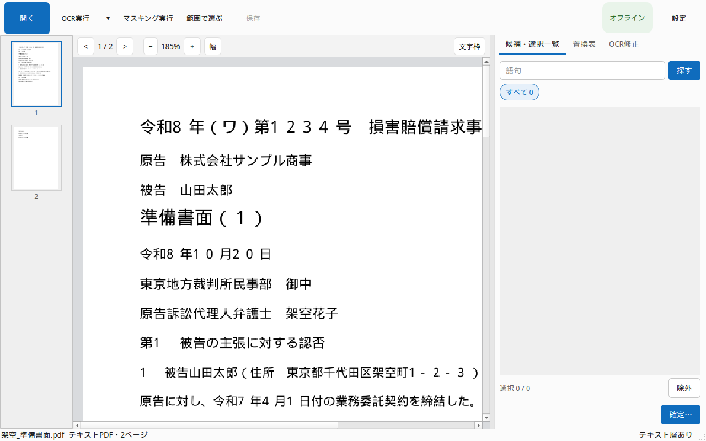
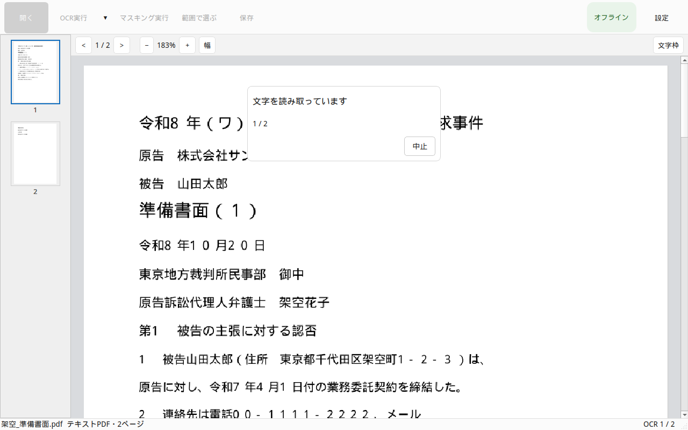
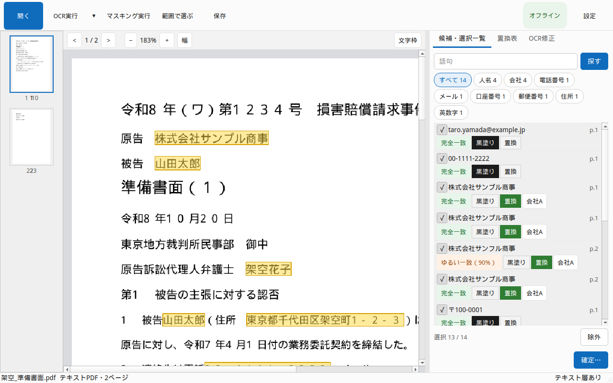
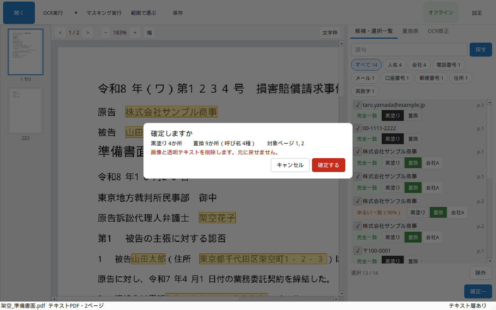
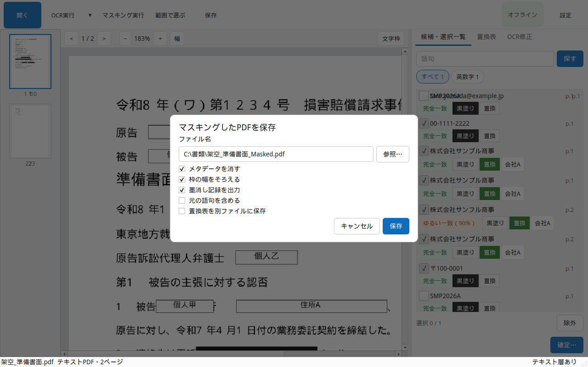

ekisui-pdf は、このパソコンの中だけで、日本語の法律文書を黒塗りしたり、呼び名に置き換えたりするアプリです。インターネットにはつなぎません。
候補は自動で出ます。出たものを、人が必ず目で見ます。チェックが付いたまま確定すると、その箇所が消えます。チェックを外したままにすると、残ります。
消し忘れることが、いちばん危険です。画面に「消した語句は見つかりませんでした」と出ても、それだけで安全ではありません。保存した PDF を自分で読み、必要な箇所が消えているか確かめてください。迷ったら、そのファイルは出さないでください。
試しに使うファイルは、インストールしたフォルダの samples にあります。架空契約_スキャン.pdf は画像だけなので、OCR実行から試せます。架空契約_テキスト.pdf は文字が入っています。どちらも架空のデータです。保存は、そのファイルの横に新しい名前でできます。このフォルダは自分のユーザーフォルダの中なので、そのまま保存できます。アンインストールすると見本は消えます。自分で保存したファイルは残ります。
開く で、PDF か Word（.doc / .docx）を選びます。ページの縮小版と本文が出ます。この時点では、まだ候補は出ません。初めてなら、samples フォルダの 架空契約_スキャン.pdf を開いてください。

スキャン画像の PDF は、OCR実行 で文字を読みます。マスキングはしません。読み終わると、右の画面は OCR修正 に切り替わります。
すでに文字が入っている PDF は、このボタンを押さなくてよいです。

マスキング実行 で、人名や電話番号などの候補が右の一覧に出ます。まだ消しません。
スキャンで読んでいないページは、先に文字を読んでから候補を出します。

一覧を見て、消すものにチェックを付けます。人名や会社は呼び名への置き換え、電話やメールは黒塗りが最初の状態です。
右下の 確定… で、選んだ箇所の画像と文字を消します。消したあとは、その文字は戻りません。

保存 は、別の名前で保存します。元のファイルは上書きしません。
マスキングのあとは 名前_Masked.pdf です。読み取りだけのときは 名前_OCR.pdf です。同じ名前があるときは「 (2)」が付きます。
保存の直後に、消したはずの語句が残っていないかを探します。残っていれば、一覧からその場所へ移れます。

右の OCR修正 で、行をクリックして直します。Enter で確定、Esc で取消です。
直した行は、候補と 置換表 に反映されます。直す前の候補は残ります。新しくできた候補は、チェックが外れた「要確認」です。それを見るまで、確定はできません。
確定済みのページは、文字も画像も消してあるので、直せません。
候補の枠の左右をドラッグすると、範囲を1文字ずつ動かせます。
Enter、Esc、またはページの空白をクリックすると、枠のつまみは消えます。動かした範囲はそのまま残ります。Esc では元に戻りません。
自動の範囲に戻すときは、枠を右クリックして 自動の範囲に戻す を選びます。
範囲で選ぶ で、ページ上をドラッグします。一覧の検索欄（Ctrl+F）に語句を入れて探すこともできます。マスキング実行の前でも後でも使えます。
置換表 で、同じ呼び名にまとめます。黒塗りの候補は表に出ません。置換表は PDF には入りません。保存するときは、別の CSV です。
右上の 設定 で、「マスキングの設定」が開きます。
読み取りのゆれを、どこまで同じ語句とみなすかを変えられます。数字を下げると、少し違う表記まで拾います。要確認にする自信の低さも、ここで変えます。短い枠を広げる最小の幅も、ここで変えます。長い枠は縮みません。
Word を開くには、このパソコンに Microsoft Word が入っている必要があります。コメントと変更履歴の印は、変換した PDF に入れません。文書のプロパティは消します。マクロは実行しません。元の Word ファイルは変更しません。
docx の中を直接塗る機能はありません。塗るのは、変換した PDF です。
次のときは、候補から漏れることがあります。漏れたものは、自分で探して足してください。
Word については、次も注意してください。
変わりません。保存は必ず別名です。確定で消えるのは、開いている作業用のページです。
保存の直後に、自動で探します。残っていれば一覧が出ます。そのあと自分の目でも読んでください。自動の確認だけでは、安全とは言い切れません。
使いません。読み取りもマスキングも、このパソコンの中で行います。
呼び名と、元の語句の対応表です。PDF とは別に保存します。元の語句を入れると、その CSV も機密になります。必要なときだけ出してください。